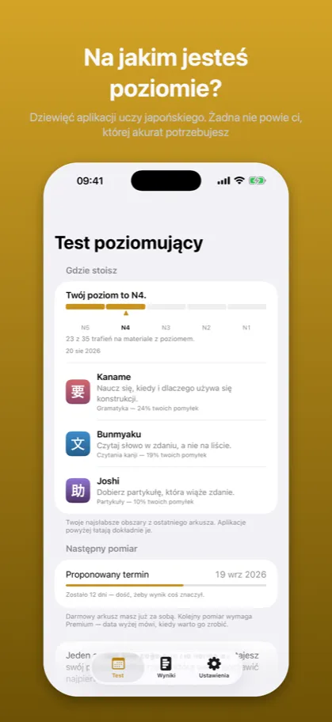
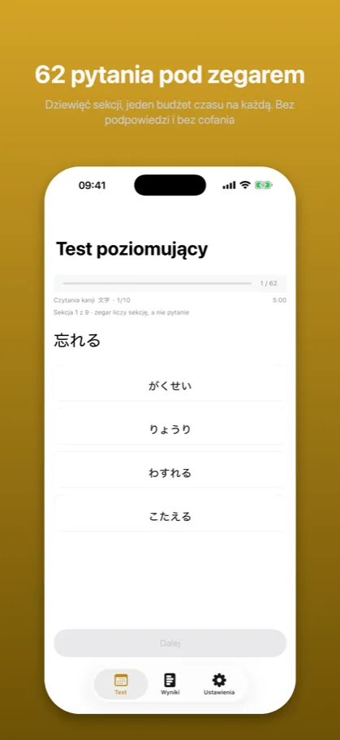
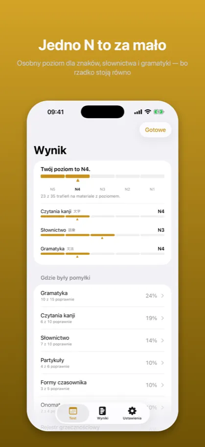

Shindan: Poziom japońskiego診断
Test JLPT: N5 N4 N3 N2 N1
Wkrótce w App Store
Aplikacja czeka na recenzję Apple. Strona opisuje wersję złożoną do sklepu.
Dziewięć aplikacji uczy po jednej rzeczy. Żadna nie powie ci, której naprawdę potrzebujesz. Jeden arkusz pod zegarem i odpowiedź przestaje być zgadywaniem.
Jak to wygląda

Dziewięć aplikacji uczy japońskiego. Żadna nie powie ci, której akurat potrzebujesz

Dziewięć sekcji, jeden budżet czasu na każdą. Bez podpowiedzi i bez cofania

Osobny poziom dla znaków, słownictwa i gramatyki — bo rzadko stoją równo
Opis ze sklepu
Shindan nie uczy. Mierzy, a potem wskazuje.
Znasz to uczucie: uczysz się, robisz postępy, a dalej nie umiesz powiedzieć, co jest twoim najsłabszym ogniwem. Aplikacja od gramatyki wie, ile masz gramatyki. Nie wie, że to partykuły kosztują cię punkty za każdym razem. Żadna z osobna nie widzi całości, bo żadna nie pyta o wszystko naraz.
Shindan pyta o wszystko naraz. Jeden arkusz, pod zegarem, a na końcu dwie odpowiedzi: gdzie stoisz i co jedno warto poprawić najpierw.
DWIE ODPOWIEDZI, NIE JEDNA
Twój poziom w skali JLPT, policzony z materiału, który poziom ma: słownictwo, czytania kanji i konstrukcje gramatyczne. Nikt nie pyta „czy jestem na poziomie trzecim" – pyta „czy zdam N3", i w tej skali pada tu odpowiedź.
Twoje słabe strony jako udział w pomyłkach: partykuły, formy czasownika, rejestr grzecznościowy, skróty mowy potocznej, onomatopeje, liczniki. One nie mają poziomu JLPT i mieć nie będą – partykułę poznajesz w pierwszym tygodniu i używasz do końca życia. Mierzenie ich tą samą skalą odebrałoby skali sens, więc mierzone są osobno.
BEZ ĆWICZEŃ, BEZ POWTÓREK, BEZ SERII
Nie ma tu czego szlifować i to jest zamierzone. Arkusz mierzy raz. Odpowiedzi nie są oceniane na bieżąco, bo trzy pomyłki pod rząd zmieniają sposób, w jaki odpowiadasz na czwartą – i wtedy test mierzy twoje nerwy, a nie twój japoński. Wynik przychodzi na końcu albo wcale.
CZEGO NIE ZROBI
Nie poda ci poziomu z połowy arkusza. Jeśli za dużo przepadło na zegarze, powie to wprost, zamiast zgadywać – liczba z cienkiego pomiaru wygląda dokładnie tak samo jak liczba z dobrego, a ktoś zbuduje na niej plan nauki.
Nie mierzy czytania dłuższych tekstów i nie mierzy słuchania. Obu brakuje, oba są nazwane na ekranie startowym i żadne nie jest schowane drobnym drukiem.
ZBUDOWANY NA DZIEWIĘCIU
Pytania pochodzą z katalogów dziewięciu aplikacji do nauki japońskiego, wszystkich tego samego autora: konstrukcje gramatyczne, słownictwo w kontekście, partykuły, odmiana, liczniki, mowa potoczna, rejestr grzecznościowy i onomatopeje. Dlatego diagnoza umie wskazać coś konkretnego – i dlatego mówi, która aplikacja co naprawia.
Pierwszy arkusz jest darmowy.
Powyższy opis jest tym samym tekstem, który stoi na karcie aplikacji w App Store – pochodzi z tego samego pliku.
Częste pytania
Czego uczy Shindan?
Shindan nie uczy. Mierzy, a potem wskazuje.
Znasz to uczucie: uczysz się, robisz postępy, a dalej nie umiesz powiedzieć, co jest twoim najsłabszym ogniwem. Aplikacja od gramatyki wie, ile masz gramatyki. Nie wie, że to partykuły kosztują cię punkty za każdym razem. Żadna z osobna nie widzi całości, bo żadna nie pyta o wszystko naraz.
Czego ta aplikacja nie robi?
Nie ma tu czego szlifować i to jest zamierzone. Arkusz mierzy raz. Odpowiedzi nie są oceniane na bieżąco, bo trzy pomyłki pod rząd zmieniają sposób, w jaki odpowiadasz na czwartą – i wtedy test mierzy twoje nerwy, a nie twój japoński. Wynik przychodzi na końcu albo wcale.
Nie poda ci poziomu z połowy arkusza. Jeśli za dużo przepadło na zegarze, powie to wprost, zamiast zgadywać – liczba z cienkiego pomiaru wygląda dokładnie tak samo jak liczba z dobrego, a ktoś zbuduje na niej plan nauki.
Dokumenty
Pozostałe aplikacje
- Kaname: Gramatyka japońska — Powtórki JLPT: N5 N4 N3 N2 N1
- Bunmyaku: Japoński w zdaniu — Słówka, kanji i furigana
- Katsuyokei: Odmiana japońska — Czasowniki, formy, fiszki
- Joshi: Partykuły japońskie — Gramatyka i ćwiczenia JLPT
- Kazoekata: Liczniki japońskie — Liczenie, kanji, ćwiczenia
- Kuzushi: Mowa potoczna — Anime, dorama i skróty
- Keigo: Grzeczność japońska — Japoński formalny do pracy
- Kifuku: Akcent japoński — Wymowa, intonacja, słuchanie
- Onomatope: Dźwięki i wyrażenia — Słówka z mangi i anime